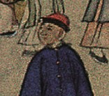
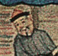
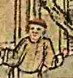

《姑苏繁华图》（又名《盛世滋生图》）由清代宫廷画家徐扬于乾隆二十四年（1759）创作，是仅次于《清明上河图》的中国古代风俗画巨作。画卷全长1241厘米，以连续全景式构图描绘了从苏州城西天平山至虎丘的繁华市井，包含人物约12,000余人、船只约400条、建筑约2,140余栋、可辨认市招260余家。
然而，传统博物馆展陈模式以静态展示为主，观众难以深入理解画卷中蕴含的丰富社会文化信息。数字人文（Digital Humanities）为这一问题提供了方法论支撑——通过计算技术与交互设计，将"观看对象"转化为"体验空间"。
The painting aims to document and celebrate the prosperity of Suzhou under Qing rule.
- RQ1: 如何通过交互设计实现传统绘画的"活化表达"，使观众从被动观看转向主动探索？
- RQ2: 多视角叙事机制能否有效增强观众对清代城市文化的深度理解与情感共鸣？
- RQ3: 如何基于学术文献构建可信赖、可验证的数字文化体验数据基础？
- RQ4: 纯前端技术方案能否支撑复杂交互体验的低门槛部署与传播？
数字人文与文化遗产可视化：近年来，数字人文领域涌现了大量文化遗产数字化项目。欧洲TimeMachine项目、美国Getty的Open Content项目等均致力于通过数字技术重构历史空间。然而，多数项目侧重于高精度图像存档，在叙事设计与交互体验方面仍有不足。
长卷画的数字化呈现：台北故宫的《富春山居图》合展、北京故宫的《清明上河图》动态版等项目尝试了长卷的动态展示，但多采用线性播放模式，缺乏用户主导的交互探索机制。
多视角叙事：文学研究中的多视角叙事理论（如热奈特的聚焦理论）为数字叙事设计提供了理论基础，但其在文化遗产可视化中的应用尚不多见。
本研究采用设计驱动研究（Design-Driven Research, DDR）方法论，结合用户中心设计（UCD）与文献驱动数据策展（Literature-Driven Data Curation）：
阶段二 · 数据建模：建立场景-行业-文化-叙事四维数据模型，实现学术数据的结构化存储与关联查询。
阶段三 · 交互设计：基于叙事传输理论（Transportation Theory）设计三重视角角色系统，通过身份代入增强文化理解深度。
阶段四 · 技术实现：采用纯前端技术栈，确保系统的可移植性与低门槛部署。
数据来源：范金民《〈姑苏繁华图〉：清代苏州城市文化繁荣的写照》系统统计了画中可辨认的260余家店铺市招，并按行业逐一分类考证。本研究将其转化为可计算、可交互的结构化数据。
HTML5 · CSS3 · Canvas
GSAP ScrollTrigger · D3.js · Native JS
JSON Data Modules · Percentage Coordinate System
10 Tile Images · Character Portraits · Cultural Videos
| 模块 | 技术 | 版本/来源 |
|---|---|---|
| 页面结构 | HTML5 | — |
| 样式系统 | CSS3 Variables, backdrop-filter | — |
| 交互逻辑 | Native JavaScript (ES6+ IIFE) | — |
| 滚动动画 | GSAP + ScrollTrigger | 3.12.5 CDN |
| 数据可视化 | D3.js | 7.9.0 CDN |
| 字体 | Noto Serif SC / Noto Sans SC / DM Sans | Google Fonts |
采用"竖向滚动驱动横向位移"方案，模拟中国传统手卷的展开过程：
坐标系统：采用百分比相对坐标 (x, y) ∈ [0, 100]，与图像缩放解耦，天然响应式。10张tile按 flex 行排列，顺序为 tile10(虎丘) → tile01(天平山)。
基于叙事传输理论，设计了三重身份视角系统。用户选择身份后，左侧竖排叙事卡片（writing-mode: vertical-rl）随滚动位置自动切换内容，实现同一场景、三种声音的多层次文化解读。



散布在画卷上的12个文化场景热点，点击后打开相框式放大叠加层，支持拖拽平移，显示场景名称与当前角色的文化故事。
| 主题 | 场景 | 坐标(x,y) |
|---|---|---|
| 科举教育 | 灵岩山雅集 | (82.2, 77.4) |
| 山塘义学 | (13.3, 90.8) | |
| 府衙府试 | (33.3, 21.0) | |
| 戏曲丝竹 | 木渎三弦弹唱 | (78.6, 90.6) |
| 遂初园堂会 | (66.5, 68.3) | |
| 春台社戏 | (51.3, 67.8) | |
| 阊门走绳索 | (21.0, 72.4) | |
| 婚礼习俗 | 木渎迎亲船队 | (75.9, 70.0) |
| 黄鹂坊桥婚礼 | (24.4, 73.9) | |
| 园林胜景 | 怡老园 | (27.2, 72.8) |
| 山塘花市 | (10.0, 48.2) | |
| 虎丘云岩寺 | (2.5, 11.0) |
近观（Magnifier）：Canvas 圆形镜头（180px直径，2.5x放大），金色边框，从对应tile图片实时裁切绘制，跟随鼠标移动。激活时隐藏默认光标，提供细节鉴赏体验。
寻迹（Find-Me）：找图游戏，右上角弹出提示卡片显示目标小图、名称与文字提示。用户点击画卷，系统计算百分比坐标与答案对比（欧氏距离 < tolerance），正确显示绿色反馈圈，错误显示红色反馈圈。
NPC对话：滚动至画卷末尾（progress ≥ 0.99）触发NPC「陆小顺」对话，打字机效果逐行显示，可引导用户进入「看图识俗」小游戏。
看图识俗：全屏iframe加载小游戏，PostMessage通信，游戏内可关闭返回主页面。
视觉设计从中国传统绘画中汲取灵感，构建完整的色彩与字体系统：
字体：标题使用 Noto Serif SC（宋体风格），正文使用 Noto Sans SC，数据使用 DM Sans。动画：水墨粒子（Canvas 20粒子径向渐变）、热点呼吸（CSS @keyframes breathe 2.5s cycle）、竖向叙事滑入（GSAP fromTo x:-60→0）、打字机效果（JS setTimeout 45ms/字）。
内容准确性：所有商业统计数据均来自范金民的学术论文，260余家市招的行业分类统计与文献记载相互印证。文化场景叙事文本经过学术文献校验，确保历史准确性。
技术性能：纯静态部署方案使系统可在任何静态服务器上运行，无需后端维护。GSAP ScrollTrigger 的 scrub: 0.5 与 anticipatePin: 1 确保了60fps的流畅滚动体验。
设计贡献：
- 首次将多视角叙事理论系统应用于中国古画数字化展示
- 提出了"竖向滚动驱动横向位移"的长卷交互范式
- 构建了百分比坐标系统，实现热点与画卷的响应式解耦
- 设计了学术数据→交互体验的完整转化流程
本研究通过《姑苏繁华图》数字人文活化展的设计与实现，验证了数字人文方法在传统绘画"活化表达"中的有效性。三重视角叙事系统证明了多层次文化解读对观众理解深度的提升作用；纯前端技术方案证明了复杂交互体验的低门槛部署可行性。
• 视频场景：将文化场景详情页改为循环播放动态视频
• 国际化（i18n）：提取文案为JSON语言包，支持中英文切换
• 深度缩放：引入OpenSeadragon实现画作高精度缩放浏览
• 古今对比：完善今昔对比滑块，增加更多对比照片
• 热力图叠加：Canvas绘制商业密度热力图，叠加在画卷上
• 角色动画：Sprite Sheet实现人物微动画
- 范金民.《〈姑苏繁华图〉：清代苏州城市文化繁荣的写照》. 长江经济网.
- 苏州市城建档案馆、辽宁省博物馆 编.《姑苏繁华图》. 文物出版社, 1999.
- 徐扬 绘.《姑苏繁华图》. 香港商务印书馆, 1988.
- 《中国风俗画稀世珍品：姑苏繁华图》. （清）徐扬绘.
- 《陕西会碑记》. 乾隆二十七年（1762）.
- Greenfield, J. "Design-Driven Research in Digital Humanities." DHQ, 2021.
- Green, M. C., & Brock, T. C. "The role of transportation in the persuasiveness of public narratives." Journal of Personality and Social Psychology, 2000.
感谢武汉大学数字人文研究中心的指导与支持。本项目所有文化数据均来源于公开学术文献，角色肖像由AI辅助生成。项目代码开源，欢迎学术交流与合作。